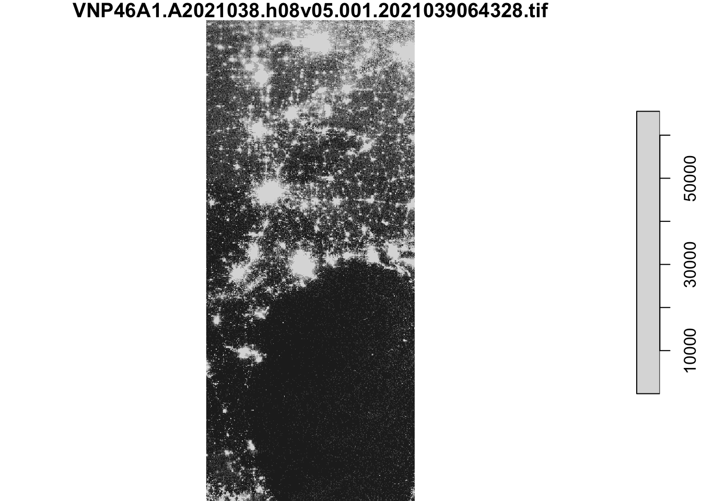
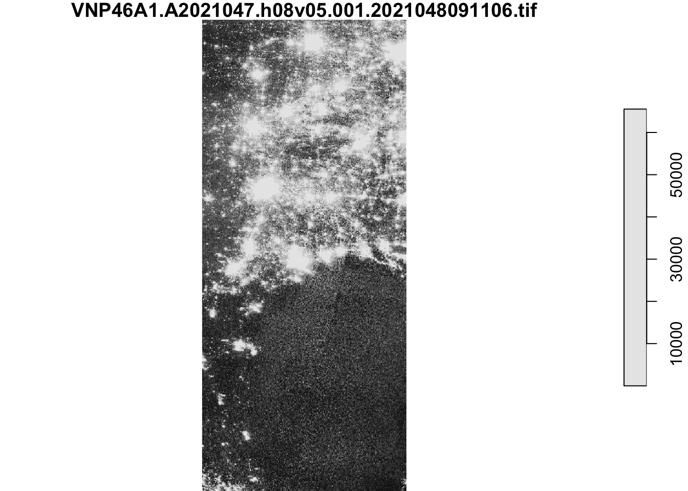
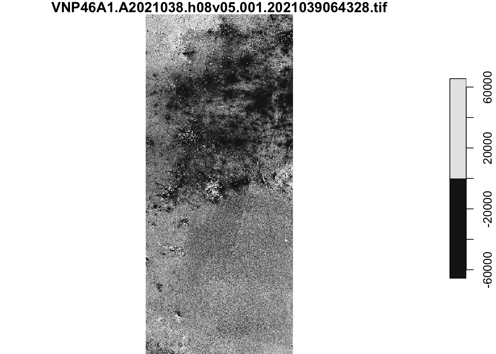

“In February 2021, the state of Texas suffered a major power crisis, which came about as a result of three severe winter storms sweeping across the United States on February 10–11, 13–17, and 15–20.”1 For more background, check out these engineering and political perspectives.
In this blog post I will:
- estimate the number of homes in Houston that lost power as a result of the first two storms
- investigate if socioeconomic factors can predict neighborhood power outage
This analysis will be based on remotely-sensed night lights data, acquired from the Visible Infrared Imaging Radiometer Suite (VIIRS) onboard the Suomi satellite. In particular, we will use the VNP46A1 to detect differences in night lights before and after the storm to identify areas that lost electric power.
To determine the number of homes that lost power, we will spatially join these data sets with OpenStreetMap data on buildings and roads.
To investigate potential socioeconomic factors that influenced recovery, we will then link your analysis with data from the US Census Bureau.
Data
Night lights
We will use NASA’s Worldview to explore the data around the day of the storm. There are several days with too much cloud cover to be useful; however, 2021-02-07 and 2021-02-16 provide two clear, contrasting images to visualize the extent of the power outage in Texas.
VIIRS data is distributed through NASA’s Level-1 and Atmospheric Archive & Distribution System Distributed Active Archive Center (LAADS DAAC). Many NASA Earth data products are distributed in 10x10 degree tiles in sinusoidal equal-area projection. Tiles are identified by their horizontal and vertical position in the grid. Houston lies on the border of tiles h08v05 and h08v06. We therefore need to download two tiles per date and join together for a full view of the city.
VNP46A1.A2021038.h08v05.001.2021039064328.h5.tif: tile h08v05, collected on 2021-02-07
VNP46A1.A2021038.h08v06.001.2021039064329.h5.tif: tile h08v06, collected on 2021-02-07
VNP46A1.A2021047.h08v05.001.2021048091106.h5.tif: tile h08v05, collected on 2021-02-16
VNP46A1.A2021047.h08v06.001.2021048091105.h5.tif: tile h08v06, collected on 2021-02-16
Roads
Typically highways account for a large portion of the night lights observable from space (see Google’s Earth at Night). To minimize falsely identifying areas with reduced traffic as areas without power, we will ignore areas near highways.
OpenStreetMap (OSM) is a collaborative project which creates publicly available geographic data of the world. Ingesting this data into a database where it can be subsetted and processed is a large undertaking. Fortunately, third party companies redistribute OSM data. We will use Geofabrik’s download sites to retrieve a shapefile of all highways in Texas and prepared a Geopackage (.gpkg file) containing just the subset of roads that intersect the Houston metropolitan area.
gis_osm_roads_free_1.gpkg
Houses
We can also obtain building data from OpenStreetMap. We again downloaded from Geofabrick and prepared a GeoPackage containing only houses in the Houston metropolitan area.
gis_osm_buildings_a_free_1.gpkg
Socioeconomic
We cannot readily get socioeconomic information for every home, so instead we obtained data from the U.S. Census Bureau’s American Community Survey for census tracts in 2019. The folderACS_2019_5YR_TRACT_48.gdb is an ArcGIS “file geodatabase”, a multi-file proprietary format that’s roughly analogous to a GeoPackage file.
We can use st_layers() to explore the contents of the geodatabase. Each layer contains a subset of the fields documents in the ACS metadata.
The geodatabase contains a layer holding the geometry information, separate from the layers holding the ACS attributes. We will combine the geometry with the attributes to get a feature layer that sf can use.
Packages
library(terra)
terra 1.6.17
library(dplyr)
Attaching package: 'dplyr'
The following objects are masked from 'package:terra':
intersect, union
The following objects are masked from 'package:stats':
filter, lag
The following objects are masked from 'package:base':
intersect, setdiff, setequal, union
Registered S3 method overwritten by 'geojsonlint':
method from
print.location dplyr
library(smoothr)
Attaching package: 'smoothr'
The following object is masked from 'package:terra':
densify
The following object is masked from 'package:stats':
smooth
library(stars)
Loading required package: abind
library(here)
here() starts at /Users/User/Library/CloudStorage/GoogleDrive-carlwilliambroderick@gmail.com/My Drive/Website/carlobroderick.github.io
Find locations of blackouts
# read in the two night lights tifs for each time period, before and after the winter stormraster_2021_02_07_a <-read_stars(here("data", "VNP46A1", "VNP46A1.A2021038.h08v05.001.2021039064328.tif"))raster_2021_02_07_b <-read_stars(here("data", "VNP46A1", "VNP46A1.A2021038.h08v06.001.2021039064329.tif"))raster_2021_02_16_a <-read_stars(here("data", "VNP46A1","VNP46A1.A2021047.h08v05.001.2021048091106.tif"))raster_2021_02_16_b <-read_stars(here("data", "VNP46A1", "VNP46A1.A2021047.h08v06.001.2021048091105.tif"))# combine tiles into a single stars object for each datemosaic_07 <-st_mosaic(raster_2021_02_07_a, raster_2021_02_07_b)mosaic_16 <-st_mosaic(raster_2021_02_16_a, raster_2021_02_16_b)# find the change in night lightslight_dif <- mosaic_07 - mosaic_16# check out the images created thus farplot_1 <-plot(mosaic_07)
downsample set to 6

plot_2 <-plot(mosaic_16)
downsample set to 6

plot_3 <-plot(light_dif)
downsample set to 6

# reclassify the difference raster, assuming that any location that experienced a drop of more than 200 nW cm-2sr-1 experienced a blackoutlight_dif[light_dif <=200] =NAlight_dif[light_dif >200] =1# vectorize the blackout masksf_lights <-st_as_sf(light_dif)# fix any invalid geometries, this is required because the st_as_sf function sometimes does not close polygons, this st_make_valid does that for ussf_lights <-st_make_valid(sf_lights)# define the Houston metropolitan areah_poly =list(rbind(c(-96.5, 29), c(-96.5, 30.5), c(-94.5, 30.5), c(-94.5, 29), c(-96.5, 29)))houston_polygon <-st_polygon(h_poly)# convert the polygon into a simple feature collectionhouston_area <-st_sfc(houston_polygon, crs ="EPSG:4326")# crop (spatially subset) the blackout mask to our region of interesthouston_lights_old_crs <- sf_lights[houston_area, ]# re-project the cropped blackout dataset to EPSG:3083houston_lights <-st_transform(houston_lights_old_crs , crs ="EPSG:3083")
![]()